Práce, která zůstává
Pečlivá příprava, jistá ruka a výsledek, který obstojí v každodenním životě.
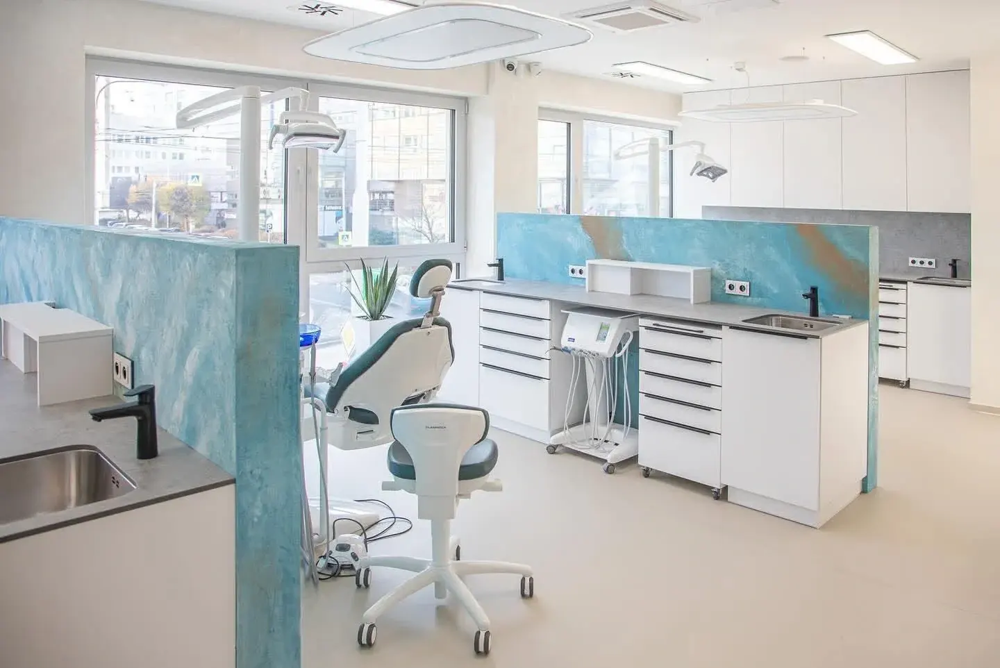
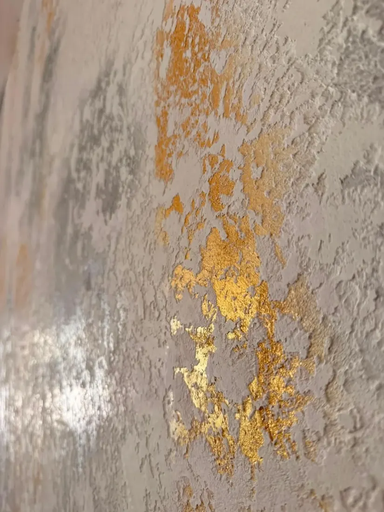
Řemeslo, které je vidět
Každý prostor má svůj příběh. Prohlédněte si ty, na kterých jsme pracovali.
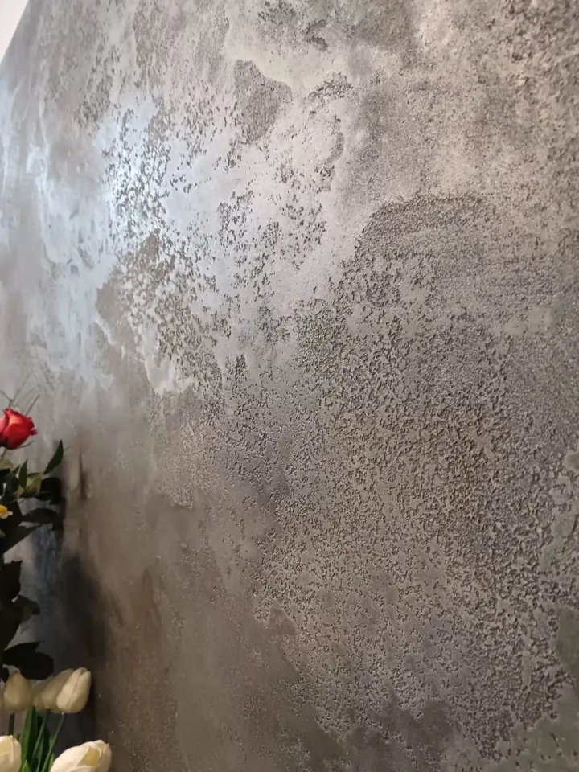
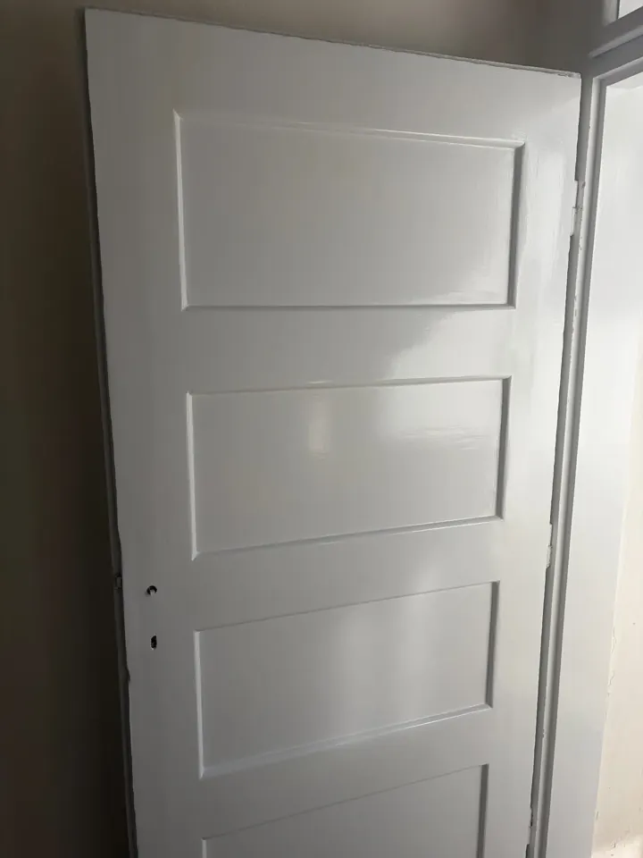
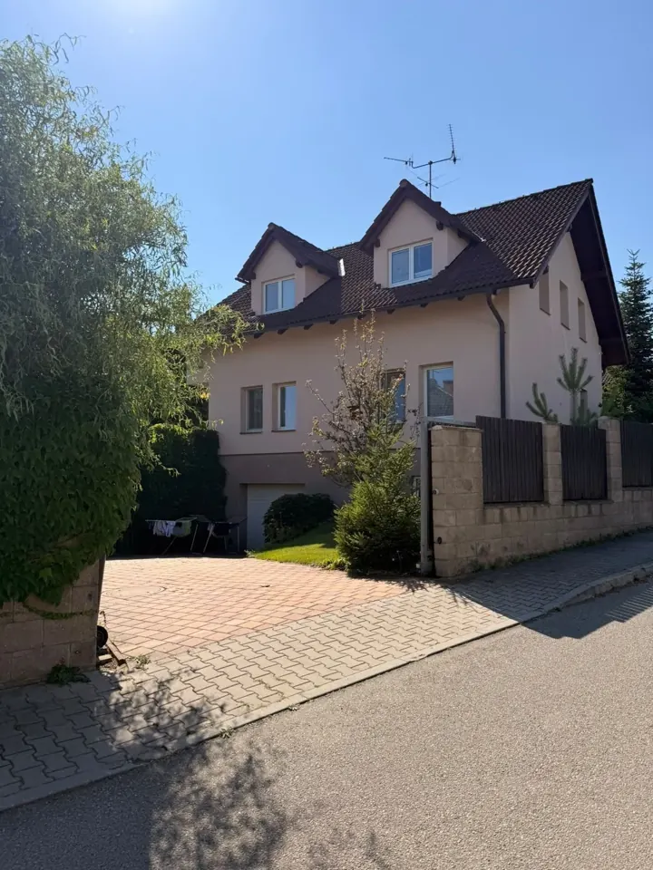

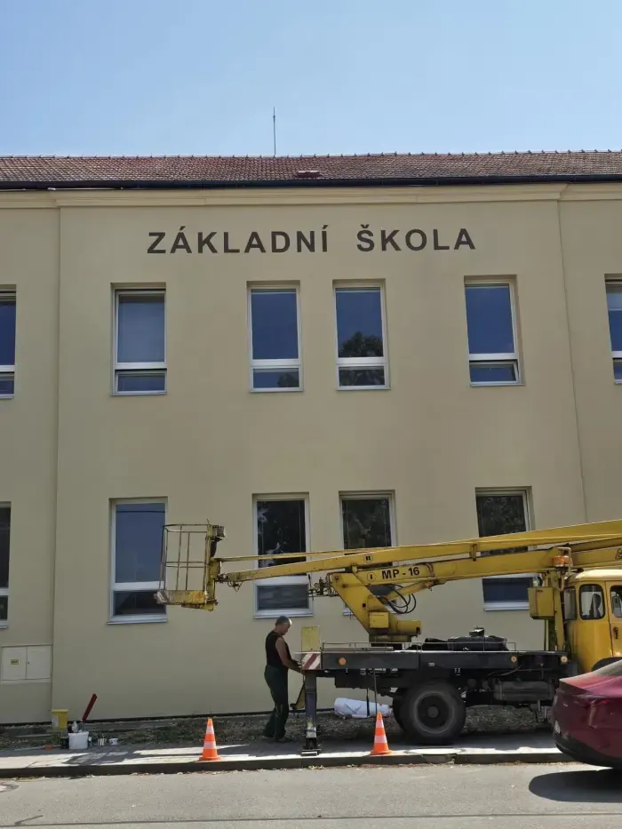
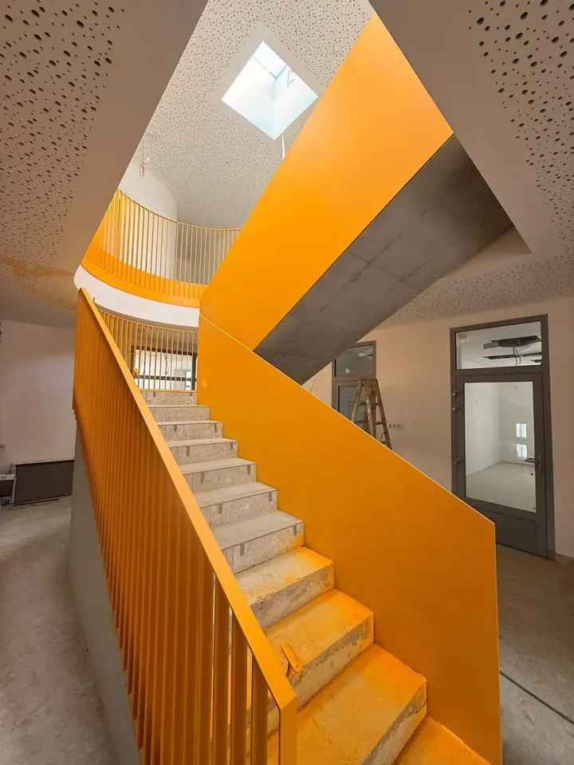
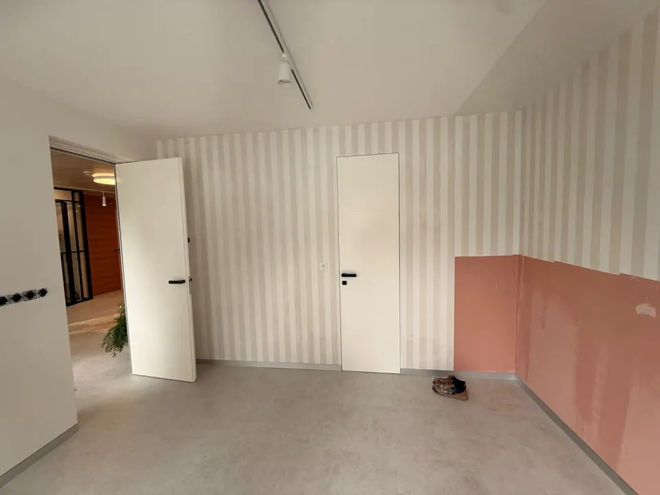
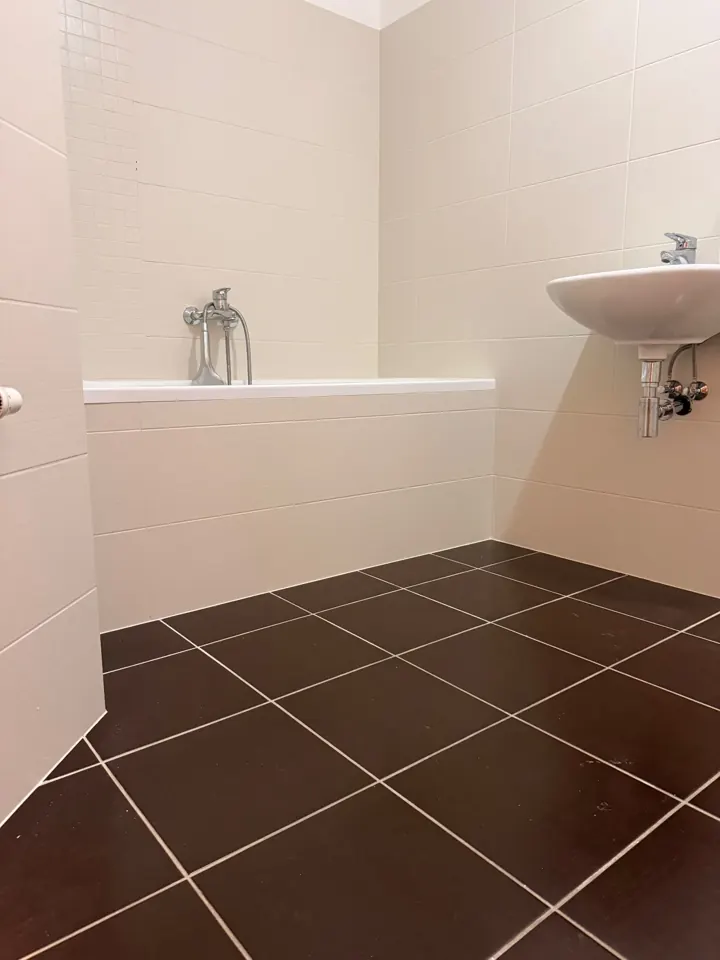
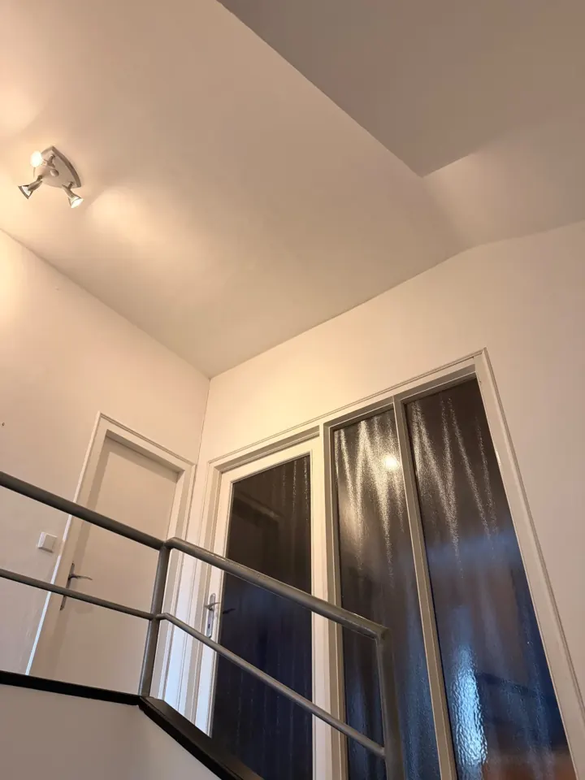
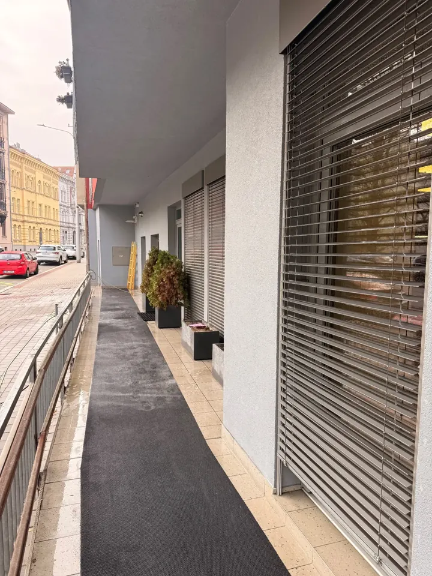
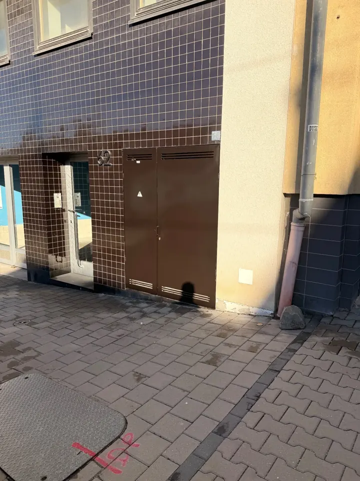
Malířské a natěračské práce v Brně
Malování bytů a pokojů, dekorativní a betonové stěrky i nátěry. Pro domácnosti a firmy v Brně a okolí. Interiér, fasáda, dřevo i kov. Vyberte práci, kterou právě řešíte.
Malování a interiéry
Malby stěn a stropů, příprava podkladu a čisté dokončení.
Dekorativní stěrky
Marmorino, betonové efekty, limewash a další dekorativní techniky.
Betonová stěrka · Marmorino · Travertino · Benátský štuk · Mikrocement
Fasády, střechy, okapy a svody
Příprava, opravy a ochranné fasádní nátěry.
Nátěry dřeva a kovů
Okna, dveře, podbití, pergoly, ploty i ocelové konstrukce.
Další služby
Popište nám prostor nebo povrch a domluvíme další postup.
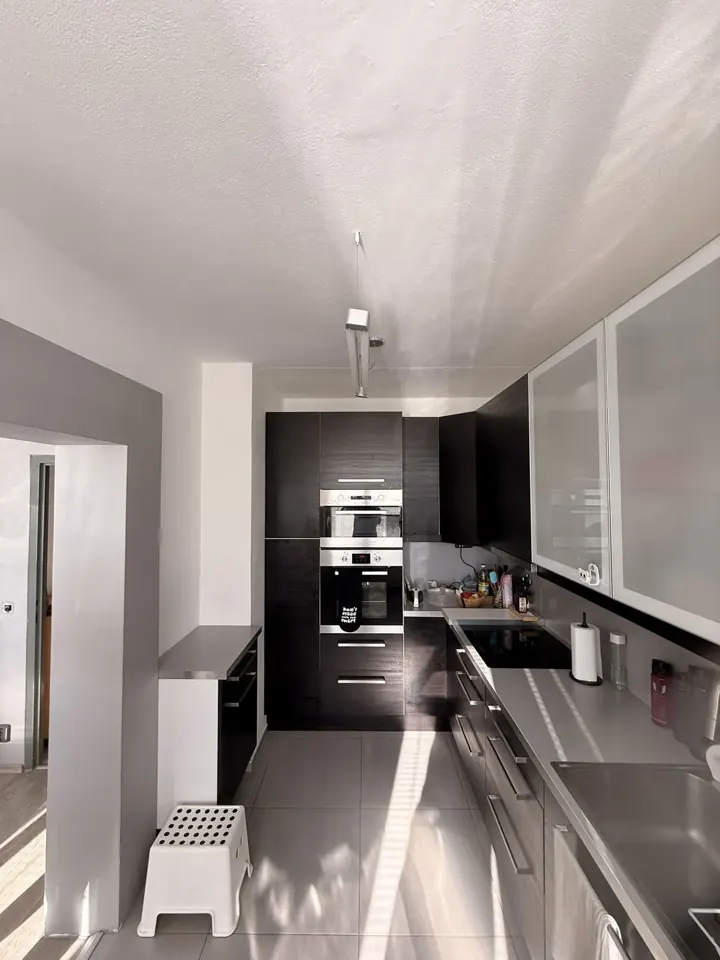
V klidu, od první domluvy
Řeknete nám, co potřebujete změnit. Společně domluvíme postup, cenu a termín – a pustíme se do práce.
Probereme vaši představu
Pošlete místo, přibližný rozsah a ideálně fotografie. Upřesníme zadání a stav povrchu.
Domluvíme řešení i cenu
Vybereme vhodný postup a materiály. Předem si potvrdíme rozsah, kalkulaci a termín.
Připravíme, provedeme, předáme
Ochráníme okolí, připravíme podklad a dokončíme povrch. Hotovou práci s vámi projdeme.
Co o nás říkají klienti
29 recenzí zákazníků
Moc rádi doporučujeme Honzu a Davida! 😊 Dělali nám doma výmalbu a stěrku a s výsledkem jsme opravdu moc spokojení. Oba jsou šikovní, pečliví a je vidět, že své práci rozumí. Co jsme ale ocenili snad úplně nejvíc – na čem jsme se domluvili, to vždy platilo. Přijeli, kdy řekli, dodrželi vše, co jsme si řekli, a celá spolupráce byla naprosto bez problémů. A musím říct, že právě tohle mi v dnešní době přijde skoro jako vzácnost. 😊 Kluci jsou navíc příjemní a spolehliví, takže za nás opravdu velká spokojenost. Určitě bychom se na ně obrátili znovu a můžeme je s čistým svědomím doporučit dál.
S realizací betonové stěrky na našem krbu jsme maximálně spokojeni. Práce byla odvedena naprosto precizně, detaily a rohy jsou dotažené k dokonalosti. Krb teď vypadá luxusně a stal se dominantou celého obývacího pokoje. Firmu Tři Mistři i pana řemeslníka Honzu mohu pro jeho profesionalitu a smysl pro detail všem vřele doporučit! 👍
Skvělá zkušenost s touto firmou při realizaci dekoračních stěrek. Borci odvedli perfektní a hlavně čistou práci. Se vším poradili a výsledek vypadá opravdu moc hezky. Oceňuji skvělou komunikaci a dodržení termínu. Určitě doporučuji.
Perfektní rychlost domluvy i samotné realizace výmalby. Byt předán v čistém stavu, vše krásně zapravené, děkujeme.
S pány mám skvělou zkušenost. Krásně nám v rámci rekonstrukce vymalovali byt. V ložnici na naše přání udělali nádhernou malířskou stěrku. Všem doporučuji!
Musím chlapy pochválit, malovali nám celý dům a na část dělali stěrku, odvedli kvalitně a velmi zodpovědně práci. Super rychlost, pečlivost a samozřejmě si po sobě uklidili.
Zakázka zahrnovala umytí a následný nátěr fasády RD. Pánové odvedli profesionální práci. Byli velmi pečliví a ochotní. S provedením zakázky jsme spokojeni.
Skvělá spolupráce od začátku do konce. Rychlá a bezproblémová domluva, spolehlivý přístup a kvalitně odvedená práce. Jednalo se již o naši opakovanou spolupráci a opět jsme byli maximálně spokojeni.
Výborná zkušenost a spolupráce. Kvalitně a precizně odvedená práce, včetně úklidu po malování prostor v OZP Brno.
Zobrazit dalších 20 recenzí
Naprostá spokojenost!
Výborná práce a skvělá komunikace.
Firmu mohu doporučit. Jsou to příjemní, pečliví a spolehliví řemeslníci.
Velice spolehlivý a šikovní kluci, kteří odvádí skvělou práci. Jednoznačně doporučuji. Umí skvěle i tapety.
Rád bych touto cestou poděkoval za dlouhodobě skvělé služby. Tuto firmu jsem na malování využil již několikrát a vždy jsem byl nadmíru spokojen. Kombinace profesionálního přístupu, stoprocentní kvality a velmi příznivé ceny je v dnešní době vzácná.
Skvěle odvedená práce, výborná komunikace, spolehlivost. Provedené práce, nové omítky, výmalba, stěrka. Všechno proběhlo podle našich přání. Můžu doporučit.
Perfektni prace 👍 doporucuji
Rychlé jednání, příjemné vystupování a skvěle odvedená práce. Jsou to Mistři 🙂
Vše proběhlo podle dohody, kvalitní práce, velmi pohodová parta, co odvede svoji práci.
Profesně i lidsky skvěle odvedená práce. Všechno perfektní. Předáno čisté a poklizené. Děkuji!
S touto firmou máme jen ty nejlepší zkušenosti. Nejprve nám realizovali malby a dekorativní stěrky v práci a díky skvěle odvedené práci jsme je bez váhání oslovili i pro náš domov. Ve všech případech odvedli precizní práci, dodrželi domluvené termíny.
Výborná a čistá práce, absolutní spokojenost.
S panem Honzou jsem byl velmi spokojený. Dostal jsem na něj kontakt na doporučení a nezklamal. Výborná domluva a vždy vyšel vstříc. Za ty peníze to stojí!
Kvalitní provedení vyborná domluva.👍
Velice spokojení.Pánové byli moc šikovní..
Moc děkujeme za spolupráci velmi spokojeni
Spolehliví, rychle a kvalitně odvedená práce.👍
Chceme moc poděkovat za skvělou práci! Rychlost, výborná domluva a hlavně krásný výsledek! Určitě se na tuto firmu znovu obrátím :)
Potřeboval jsem zapravit otvory v sádrokartonu a vymalovat kuchyň a koupelnu. Mile mě překvapila samostatnost, smysl pro detail i časová flexibilita.
Tři Mistry můžu opravdu doporučit. Už od prvního kontaktu jsem měla velmi dobrý dojem a samotná realizace moje očekávání ještě předčila. Kluci byli ochotní, pečliví a nic nebyl problém. Odvedli precizní a skvělou práci na všem, na čem jsme se domluvili, také splnili. S výsledkem výmalby a oprav zdí jsem moc spokojená a určitě se na Tři Mistry v budoucnu znovu obrátím. Můžu je jen doporučit.
Řekněte nám, co potřebujete
Malování bytu, stěrka nebo nový nátěr? Popište práci, místo a přibližný rozsah. Když přidáte fotky, snáz navrhneme další postup. Rozsah práce, cenu i termín spolu upřesníme.